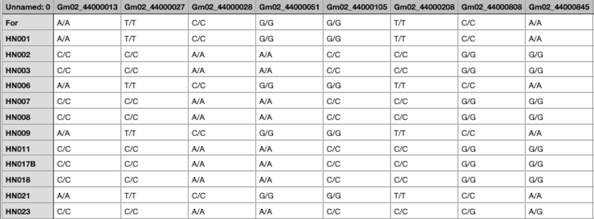
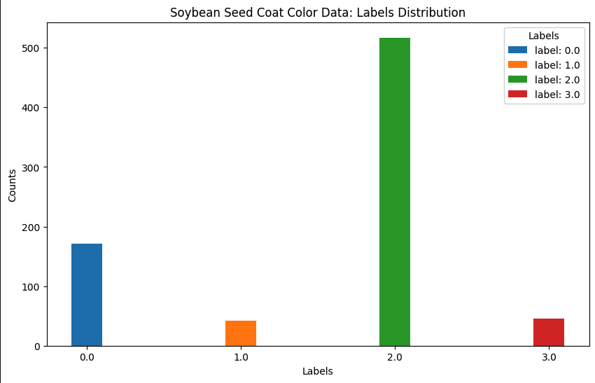
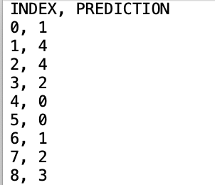

Problem Statements
Quick Links (this page):
- Phase 1: Soybean Data ("Don't Spill the Beans!)
- Problem I: Membership Inference Attack [March - April]
- Red Team Challenge Problem
2025 Privacy Red Team Calendar of Events
Teams are welcome to register at any point during the exercise and submit an entry for any problem. Participating in Phase 1 isn't required for participating in Phase 2.
Phase 1: Soybean Data ("Don't Spill the Beans!")
The first problem we’re addressing is at the first Privacy Barrier in the federated learning pipeline:
the Untrusted Central Model. In each round of federated model training, clients submit parameter
updates based on their private local data. The central model collects these and uses them to update
its model of the full population. The central model then shares its update with the clients, and the
process repeats until the central model is fully trained.
During this process the clients should retrain full rights and privacy for their individual records.
But what if the central aggregator could attack the client model updates to learn about their
individual records? Do clients need to use privacy protection like differential privacy to ensure
their model updates don’t reveal too much? How much protection do they need?

In the Phase 1- Advanced Problem, releasing in April, we’ll look at a much more invasive attack: reconstruction. Can an attacker use the transcript of federated model parameter updates to reconstruct the original data for each client?
Phase 1- Basic Problem: Membership Inference Attack [March - April]
Research Questions: In this problem we focus on the worst case scenario for membership inference: what happens when the clients submit fully trained, potentially overfit local models to the untrusted central party? We want to explore the following important questions:
- Are the regular CNN’s vulnerable to membership inference attacks?
- Can differential privacy help protect client data?
- Can it help even if epsilon is so large that the added privacy noise doesn’t affect the overall utility?
- Different clients have different local data distributions– does the effectiveness of differential privacy differ for different clients?
Machine Learning Data and Task: The task the models are trained to do here is predict seed color for soy bean plants. The columns in the data have been reduced to the gene variants most relevant for this task.
Look below for an example of gene variant data. Each column represents a gene, and the value of the column indicates whether a given plant’s gene varies from the “default” value. For instance the value “A/T” indicates that the default value of the gene is “A”, but instead this plant has value “T”. Some genes vary from default more than others, and different variants may have more or less importance for the plant’s visible properties. Note that the soybean records in the competitor's pack have been processed into a binary format ("one hot encoding") to make them easier for the models to work with; they're more machine readable and less human readable than the raw data below.

Each problem during the exercise will focus on a different task; the data and models here are focused on predicting seed coat color. The overall distribution of seed color labels in the population as a whole looks like this:

Executing a Membership Inference Attack:
Membership inference attacks in general operate by training an attack model to predict whether a record belongs to a given model’s training data. The idea is that the targeted model will have better confidence and accuracy on records it was trained on, as compared to records it hasn’t seen before. This is more likely to be true if the training data is very small or the model fit its data very closely.
Added noise can help prevent overfitting and reduce the risk of membership inference attacks. But it’s not clear how much noise is enough, and since added noise can reduce (or eliminate) the utility of clients with smaller data sets, we don’t want to add more noise than we have to. That’s what you’ll help us explore in this problem.
We have three sets of client models for you to attack:
- CNN: These client models have no added noise, and were trained for 100 epochs
- High Privacy DP: These client models have noise added during the training process, with privacy loss parameter epsilon set to 10, clipping at 2.0, and were trained for 100 epochs. They should be very private, but the added noise reduces their utility on the seed coat color task, especially for smaller clients.
- Low Privacy DP: These client models have noise added with privacy parameter epsilon= 200, clipping at 2.0, trained for 100 epochs. They perform nearly as well on the task as the regular CNN, but since so little noise is added, are they really private?
For each client model we will provide you with two sets of records to help train your attack:
- Relevant Records: These complete records (including correct seed coat color label) are similar to the clients training data, but might or might not have been actually included in the client’s training data. /li>
- External Records: These complete records (including correct seed coat color label) are guaranteed to have not been included in the client’s training data.

How precisely do you train an attack model? Check out our resources page for libraries and references, and our techniques page to see what other participants have tried.
Red Team Challenge Problem
You can find a link to the competitors pack with everything you need to prepare a submission on the Submit page.
For each of our three privacy settings (CNN, DPLowPrivacy, DPHighPrivacy) we’ll provide the following (see Federated Membership
Inference Attack Design diagram above):
- Client models 1, 2, 3, 4. These represent the worst case for privacy, overtrained local models that the untrusted central aggregator might be able to attack. Like real world clients, they have different data distributions. Some may be easier to attack and some may be harder.
- Relevant records and External records for each client. This is data you can use to train your attack model, see Executing a Membership Attack for more information.
- Challenge Records. These are the records we want you to attack. Each record has a unique index number. For each record, predict whether it belongs to client 1, 2, 3, 4 or write 0 if none of the above.
Submission format:
For each of the three privacy settings, submit a Challenge Record Prediction csv file with the challenge record index number and your prediction for which client it belongs to: 1, 2, 3, 4 or 0 for none.
We’ll also ask you for any references (papers, libraries, etc) relevant to your submission, a short description of your approach, an estimate of the computation time/power needed for your approach, and whether you’d like to be included in our Techniques showcase.
Submission schedule:
The basic problems in each phase are intended to help you get a feel for the data set. For this reason we give you two opportunities to submit to the leaderboard on the basic problems: an intermediate leaderboard update and a final leaderboard update. Submit your predictions for the challenge records by the deadline, and you’ll get back a percentage accuracy on the leaderboard.Note you can submit up to three attempts for every leaderboard update deadline, using different approaches/configurations. Your team will be scored by your highest performing entry. This gives you a chance to try out multiple libraries or ideas.
- April 1st: Intermediate Leaderboard Deadline (Basic Problem, Phase 1)
- May 1st: Final Leaderboard Deadline (Basic Problem, Phase 1)
We’ll be rating different attack libraries by how successful they are, and sharing what we learn about the overall privacy protection of different client models. The goal here isn’t just to get at the top of the leaderboard, it’s to find out together in a realistic setting how attacks behave, and how safe these models really are.